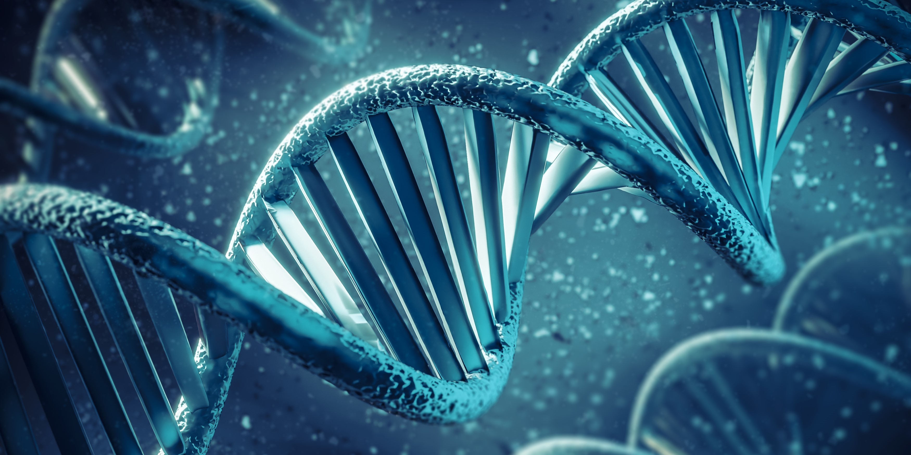

Bienvenidos a este viaje de
Biología Espiritual

Un encuentro con tu Sabiduría Biológica Ancestral

Conciencia = Unir las partes

El deseo de hacer un cambio profundo

Re–educamos nuestras Células desde adentro

Sanando el pasado, el presente y el futuro

Somos Semillas Universales
¿Qué es la Biodescodificación?
Vemos que muchas veces aún aplicando las mejores técnicas, servicios y productos disponibles junto
con
los
mejores Médicos y Especialistas algunos síntomas o enfermedades no terminan de mejorar.
La Biodescodificación es una Medicina Natural que unimos a lo largo de más de 35 años de formación en
los
mejores
Hospitales,
Sanatorios, Clínicas y Universidades del Mundo.
La Biodescodificación propone una mirada integral de la persona. Entiende que cada síntoma es la
puerta
de entrada a nuestro Ser más profundo y que al entenderlo y desbloquearlo activa un proceso de
Transformación Personal que ayuda a resolver y a restaurar la Salud y el Bienestar.
Es volver al Origen Biológico Universal Perfecto, que se ha perdido en algún momento de nuestro
camino.
La búsqueda de ese Ser Humano que vino a trascender todas y cada una de sus historias de dolor.
Con seguridad el haber transitado un síntoma, una enfermedad o una historia de vida desafiante te ha
traido
hasta aquí.
Siendo consciente de mi historia presente es que hoy tengo disponible el poder interpretar lo que no
hace
plena mi Vida.
Gracias a estas experiencias, junto a mis dolencias propias y al haber escuchado el mensaje profundo
de
mis
síntomas he logrado muchas veces sanarme y sanar mi Universo y así transformarme en Creador
de una Nueva Realidad.
Un Ser que se declara CREADOR de su propio Universo
Testimonios
( Proximamente )
<- Deslizá para ver contenido ->
Actividades
DESCODIFICANDO MI VIDA
Sanando, Creando y Generando Consciencia en tu Universo
APRENDIENDO EL CAMBIO
Conectar con tu Potencial Biológico Sanador - Medicina Germánica
PROGRAMA CONSULTORES DEWEY BIO
BioHarmonía en mi Vida
Ciencia y
Sanación
Biodescodificación
Biológica: Sanando el Cuerpo y la Mente desde el Origen

Bio Institute
Nuestra misión biológica es manifestar la disciplina que busca comprender la conexión entre nuestras emociones, pensamientos, creencias y su impacto en nuestra salud física. Partiendo del principio de que nuestro cuerpo es un reflejo de nuestro estado emocional, la biodescodificación nos invita a explorar las emociones y conflictos subyacentes que pueden manifestarse como enfermedades o síntomas físicos
Nuestro Enfoque
Como Seres Biológicos, nuestro enfoque se centra en acompañar a los pacientes/consultantes en un viaje de autoconocimiento y Sanación Natural Integral. Utilizamos una combinación de técnicas y herramientas, incluyendo la interpretación de síntomas físicos, la exploración de la historia personal y familiar, el análisis de patrones emocionales y la aplicación de Terapias Biológicas complementarias.
Nuestros Servicios
Ofrecemos una variedad de servicios personalizados para abordar las necesidades individuales de nuestros consultantes así como la formación de Consultores para Transformarnos en Sanadores Biológicos Espirituales y ser las Semillas Estelares de la Nueva Humanidad hoy, que incluyen:
1. Consultas individuales: Sesiones personalizadas para explorar las emociones subyacentes detrás de los síntomas físicos y diseñar un plan de acción para la Sanación. Conciencia para Unir las partes que hemos perdido en el camino.
2. Talleres y Seminarios: Compartimos talleres y seminarios educativos sobre Biodescodificación Biológica, donde compartimos herramientas prácticas para mejorar la Salud emocional y física.
3. Programas Consultores DeweyBio: Programas para la formación de Consultores en el Bienestar Biologico, que combinan la Biodescodificación con prácticas de Re-educar las células – Reset y Transformación del autocuidado, Nutrición Consciente y técnicas de manejo de las nuevas herramientas disponibles hoy.
Nuestro Compromiso
La pasión en el saber que Todos los Milagros son Posibles y que solo debemos corregir un error biológico en este instante presente para lograrlo.
Romper todas las reglas para elegir hoy el Gozo, el Placer y la Alegría de una Nueva Vida.
Sobre Mi
Soy Claudio Dewey
-
Biodescodificador Biológico
-
Instructor en Respiración – Aire & Sonido
-
Consultor en Bienestar e Integración para Mi Vida Plena
A través de mi vida he transitado varios caminos de autoconocimiento que me han dado diversas herramientas para Crecer y Evolucionar continuamente.
Tengo la firme certeza que todo tiene un sentido profundo y que al Despertar la Consciencia los Milagros Biológicos suceden.